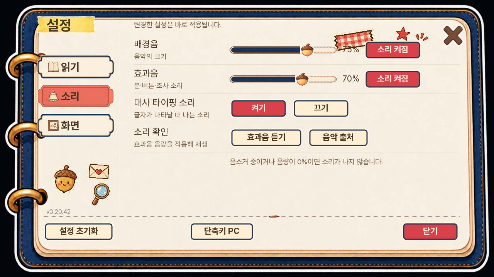
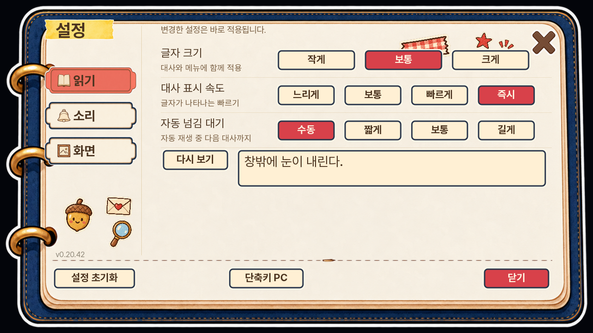
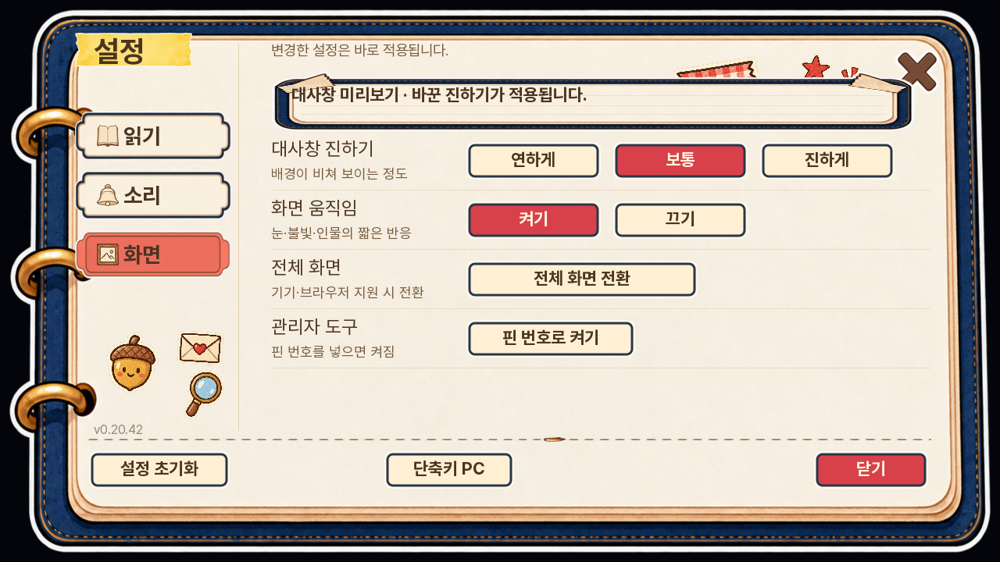
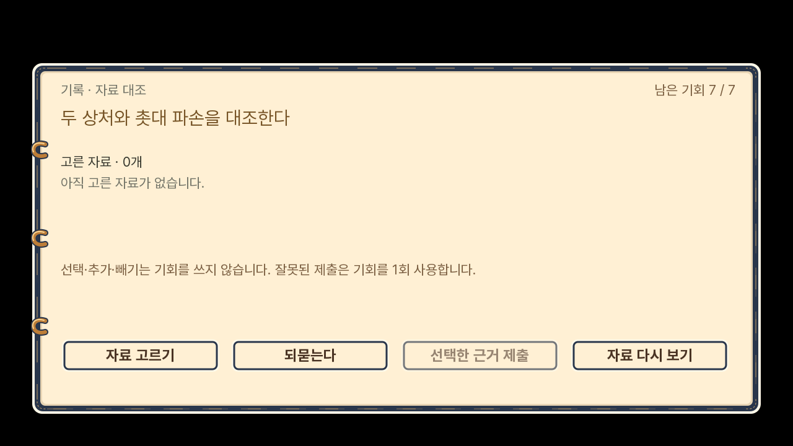
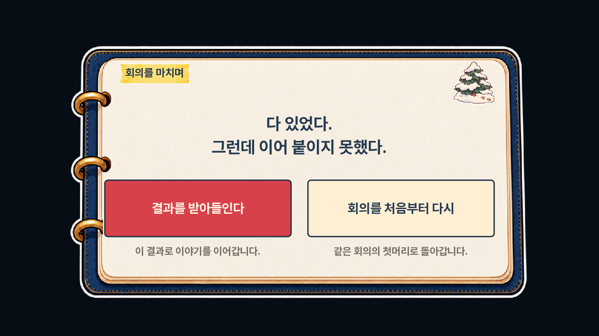
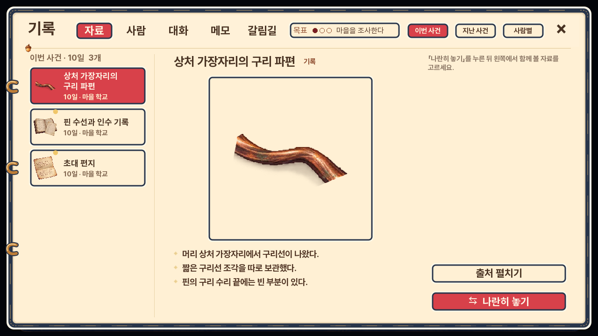

<meta charset="utf-8"><style>body{margin:0;background:#eee8dc;color:#29364b;font-family:sans-serif}main{display:grid;grid-template-columns:1fr 1fr;gap:8px;padding:8px}article{background:white}h3{font-size:20px;margin:0;padding:10px 14px}img{display:block;width:100%}a{color:inherit;text-decoration:none}header{font-size:24px;font-weight:bold;padding:16px}</style><header>다람탐정 0.20.42 · 실제 UI 검토</header><main><article><h3>옵션 · 소리</h3><a href="02-settings.png"></a></article><article><h3>옵션 · 읽기</h3><a href="15-settings-reading.png"></a></article><article><h3>옵션 · 화면</h3><a href="16-settings-display.png"></a></article><article><h3>회의 · 대사</h3><a href="17-meeting-dialogue.png"></a></article><article><h3>회의 · 자료 대조</h3><a href="13-meeting.png"></a></article><article><h3>회의 재시도 · 화면 단독 표시</h3><a href="12-meeting-retry.png"></a></article><article><h3>기록 / 자료</h3><a href="10-records.png"></a></article></main>